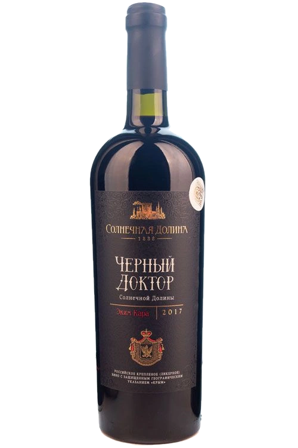
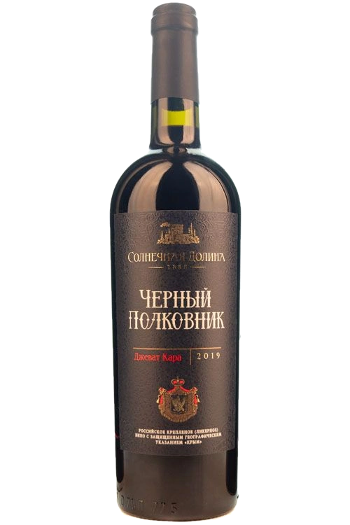
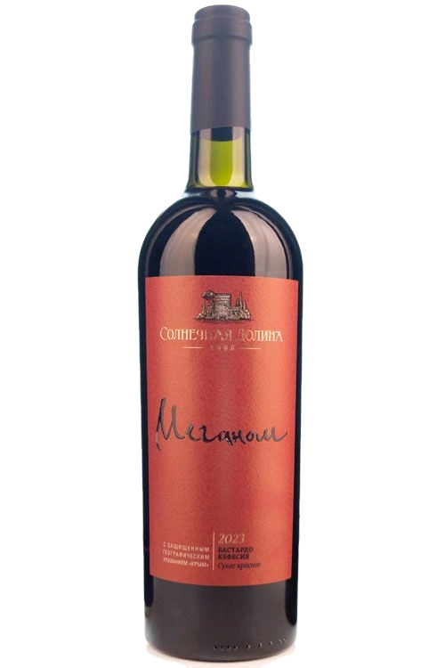
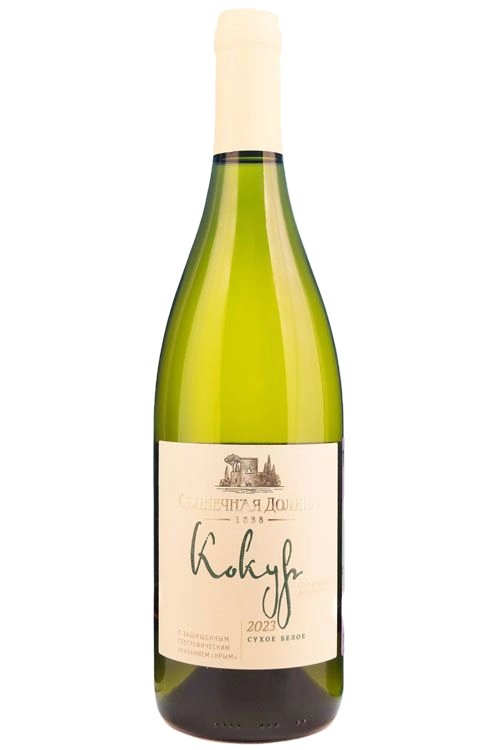
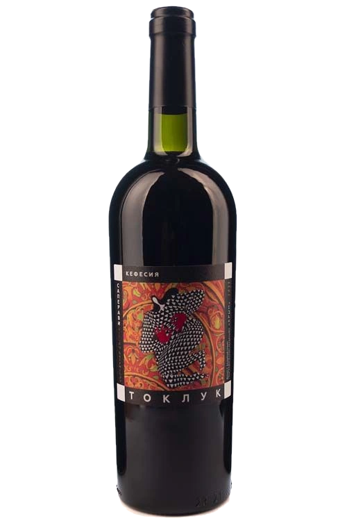
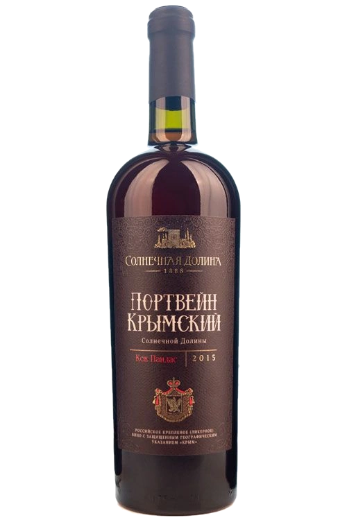
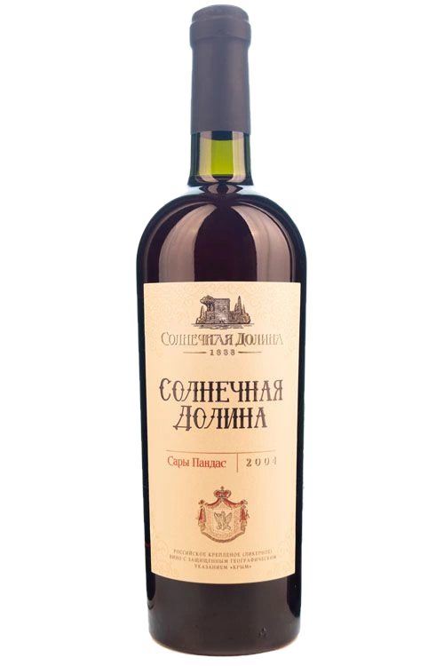

The house wine list · 83 cards · 10+ indigenous varieties, four on the shelf
Four worlds —one terroir
Sudak, the Arhaderesse tract. Everything the house bottles today, and everything it has kept since 1990.




Chapter I · 9 items
Meganom
The cape's terroir: Bastardo Magarachsky and Kefesia from thirty-five-year-old vines — and four bruts from the same wind.
- Core varieties
- Bastardo Magarachsky · Kefesia · White Kokur · Chardonnay
- Alcohol
- 11–13% ABV
- Sugar
- up to 3 g/L still · up to 6 g/L brut
- Ageing
- Caucasian oak barrique (Reserve) · French oak (Select)
- Serving
- 7–16 °C
Aged sparkling · brut · 4
- Meganom CuvéeChardonnay 100%11-13% ABVup to 6 g/L
- Meganom Blanc de BlancsWhite Kokur, Chardonnay, Riesling, Rkatsiteli, Aligoté11-13% ABVup to 6 g/L
- Meganom KokurWhite Kokur11-13% ABVup to 6 g/L
- Meganom RoséChardonnay, Pinot Noir11-13% ABVup to 6 g/L
Dry · 2
- Meganom WhiteAligoté, Rkatsiteli, Kokur, Gars Levelyu, Furmint13% ABV4 g/L
- Meganom RedBastardo Magarachsky, Kefesia13% ABVup to 3 g/L
Aged dry · 2
- Meganom ReserveBastardo Magarachsky, Kefesia13% ABV4 g/L
- Meganom SelectBastardo Magarachsky, Kefesia13% ABV—
Souvenir format · 1
Enter the world →
Chapter II · 7 items
Tokluk
A tract on shale where, by the house winemakers' account, Montepulciano and Saperavi first met.
- Varieties
- Petit Verdot · Marselan · Carignan · Montepulciano · Saperavi · Kefesia · Vermentino · Chardonnay · Sauvignon Blanc
- Alcohol
- 13–14% ABV
- Sugar
- not listed on the line's cards
- Ageing
- "Tokluk Reserve" — aged dry
- Serving
- 12–18 °C
- Tokluk ReservePetit Verdot, Marselan, Carignan13% ABV—
- Tokluk WhiteSauvignon Blanc, Vermentino, Chardonnay13% ABV—
- Tokluk VermentinoVermentino, Chardonnay13% ABV—
- Tokluk Merlot Petit Verdot ShirazMerlot, Shiraz (Syrah), Petit Verdot13.5% ABV—
- Tokluk MontepulcianoMontepulciano, Saperavi13% ABV—
- Tokluk Saperavi KefesiaSaperavi, Kefesia13% ABV—
- Tokluk Cabernet FrancCabernet Franc, Cabernet Sauvignon, Merlot14% ABV—
Chapter III · 25 items
Quiet wines of the house
Kokur from vines over thirty-five years old — and varieties the house took up among the first in Russia.
- Varieties
- Kokur 100% · Sauvignon Vert · Muscats · Sary and Kok Pandas · Carignan · Marselan · Petit Verdot
- Alcohol
- 11–13.5% ABV
- Sugar
- 3–4 g/L dry · 30 g/L semi-sweet
- Ageing
- Reserve: Carignan, Marselan, Petit Verdot
- Serving
- 10–16 °C
Varietal dry · Sun Valley · 14
- Kokur of Sun ValleyKokur 100%13% ABV4 g/L
- MuscatWhite Muscat, Muscat of Alexandria, Muscat Ottonel12% ABVup to 3 g/L
- SoldayaSary Pandas, Kok Pandas, Solnechnodolinsky, Kapselsky White, Soldaya, White Kokur13% ABVup to 3 g/L
- Sauvignon of Sun ValleySauvignon Vert 100%13% ABV4 g/L
- Dry White of Sun ValleyWhite Kokur, Rkatsiteli, Aligoté12% ABV—
- RoseSyrah12.5% ABVup to 3 g/L
- Petit VerdotPetit Verdot, Kefesia13% ABVup to 3 g/L
- Cabernet of Sun ValleyCabernet Sauvignon 100%13% ABV4 g/L
- ShirazShiraz (Syrah)——
- Merlot of Sun ValleyMerlot——
- CarignanCarignan13.5% ABV—
- SaperaviSaperavi, Kefesia13% ABV—
- MarselanMarselan, Carignan13% ABVup to 3 g/L
- Dry Red, Sun ValleyBastardo Magarachsky, Merlot, Cabernet Sauvignon, Odessa Black12% ABV—
Reserve · aged dry · 3
- Carignan ReserveCarignan13.5% ABV—
- Marselan ReserveMarselan, Carignan12.5% ABV—
- Petit Verdot ReservePetit Verdot, Kefesia12.5% ABV—
Semi-sweet · Sun Valley · 3
- Sun Valley Semi-Sweet WhiteRkatsiteli, Chardonnay, Aligoté, Sauvignon, Kokur11-13% ABV30 g/L
- Sun Valley Semi-Sweet RoséKokur, Merlot, Rkatsiteli, Cabernet Sauvignon11-13% ABV30 g/L
- Sun Valley Semi-Sweet RedBastardo Magarachsky, Cabernet Sauvignon, Odessa Black11-13% ABV30 g/L
"Sun Valley" brand · 5
- Dry White, "Sun Valley" brandChardonnay, White Kokur, Sauvignon Blanc, Sauvignon Vert, White Muscat, Rhine Riesling, Augustin, Viognier, Gruner Tamansky, Pinot Blanc, Traminer Rose, Odessa Muscat, Viorica11-13% ABV—
- Dry Rosé, "Sun Valley" brandWhite Kokur, White Muscat, Chardonnay, Rhine Riesling, Sauvignon Vert, Tsimlyansky Cherny, Merlot, Shokoladny11-13% ABV—
- Dry Red, "Sun Valley" brandSaperavi, Merlot, Cabernet Sauvignon, Pinot Noir, Cabernet Franc, Alicante Bouschet, Bastardo Magarachsky, Syrah, Montepulciano, Carignan, Petit Verdot, Marselan, Pinot Noir11-13% ABV—
- Semi-Sweet White, "Sun Valley" brandChardonnay, White Kokur, Sauvignon Blanc, Sauvignon Vert, White Muscat, Rhine Riesling, Augustin, Viognier, Gruner Tamansky, Pinot Blanc, Traminer Rose, Odessa Muscat, Viorica, Concentrated grape must11-13% ABV30 g/L
- Semi-Sweet Red, "Sun Valley" brandSaperavi, Merlot, Cabernet Sauvignon, Pinot Noir, Cabernet Franc, Alicante Bouschet, Bastardo Magarachsky, Syrah, Montepulciano, Carignan, Petit Verdot, Marselan, Pinot Noir, Concentrated grape must11-13% ABV30 g/L

Chapter IV · 4 items
Four names of the house
Four wines the house ages for years in oak barrels and vats and calls by their own names.
- Varieties
- Ekim Kara · Dzhevat Kara · Kefesia · White Kokur · Kok and Sary Pandas · Solnechnodolinsky
- Alcohol
- 16–17.5% ABV
- Sugar
- 95–160 g/L
- Ageing
- for years, in oak barrels and vats
- Serving
- 16–18 °C · a tulip-shaped glass
- Black Doctor of Sun ValleyEkim Kara, Kefesia, Dzhevat Kara16% ABV160 g/L
- Black ColonelOdessa Black, Bastardo Magarachsky, Cabernet Sauvignon, Dzhevat Kara, Kefesia17.5% ABV110 g/L
- Crimean Porto of Sun ValleyWhite Kokur, Rkatsiteli, Kok Pandas, Kapselsky White, Solnechnodolinsky17.5% ABV95 g/L
- Sun Valley WhiteSary Pandas, Kok Pandas, Solnechnodolinsky, White Muscat, Tokay varieties, White Kokur16% ABV160 g/L

Chapter V · 5 items
Fortified Wines of Sun Valley
Fortified wines without long ageing: from a Kagor bound for the dioceses of Russia, to a Porto in ten-liter glass.
- Varieties
- White, Rose, and Hamburg Muscat · Odessa Black · Bastardo Magarachsky · White Kokur · Rkatsiteli
- Alcohol
- 15.5–17.5% ABV
- Sugar
- 60–170 g/L
- Formats
- 0.75 · 2.0 · 5.0 · 10.0 L
- Serving
- 14–18 °C
- Festival MuscatWhite Muscat, Rose Muscat, Hamburg Muscat16% ABV135 g/L
- PrivatCabernet Sauvignon, Odessa Black, Saperavi, Hamburg Muscat, Merlot15.5% ABV105 g/L
- Kagor of Sun ValleyCabernet Sauvignon, Bastardo Magarachsky, Odessa Black, Saperavi, Merlot16% ABV170 g/L
- Porto of Sun Valley WhiteWhite Kokur, Rkatsiteli17.5% ABV60 g/L
- Porto of Sun Valley RedOdessa Black, Merlot, Cabernet Sauvignon17.5% ABV60 g/L

Chapter VI · 11 items
Collection 1990–2003
Eleven vintages the house never bottled again — including a Madeira aged in the sun.
- Vintages
- 1990 · 1991 · 1993 · 1996 · 1997 · 2000 · 2001 · 2003
- Alcohol
- 15.5–18.5% ABV
- Sugar
- 40–170 g/L
- Unique
- Crimean Madeira 1993 (canteiro method) · Golden Fortune of Arhaderesse 1996
- Serving
- 16–18 °C
- White Crimean Porto, vintage 1990White Kokur, Rkatsiteli, Kok Pandas, Kapselsky White, Solnechnodolinsky17.5% ABV95 g/L
- Sun Valley, vintage 1991Kok Pandas, Sary Pandas, Solnechnodolinsky, White Muscat, Tokay varieties, White Kokur16% ABV160 g/L
- Crimean Madeira, vintage 1993Shabash, White Kokur, Rkatsiteli18.5% ABV40 g/L
- Black Colonel, vintage 1996Odessa Black, Bastardo Magarachsky, Cabernet Sauvignon, Dzhevat Kara, Kefesia17.5% ABV110 g/L
- Golden Fortune of Arhaderesse, vintage 1996White Kokur, Rkatsiteli, Kok Pandas, Sary Pandas17.5% ABV100 g/L
- White Crimean Porto, vintage 1997White Kokur, Rkatsiteli, Kok Pandas, Kapselsky White, Solnechnodolinsky17.5% ABV95 g/L
- Black Doctor of Sun Valley, vintage 2000Ekim Kara, Dzhevat Kara, Kefesia16% ABV160 g/L
- Black Doctor of Sun Valley, vintage 2001Ekim Kara, Dzhevat Kara, Kefesia16% ABV160 g/L
- Privat, vintage 2001Bastardo Magarachsky, Odessa Black, Pinot Noir, Cabernet Sauvignon15.5% ABV105 g/L
- Festival Muscat, vintage 2001White Muscat, Hamburg Muscat, Rose Muscat, Muscat Ottonel16% ABV135 g/L
- Kagor of Sun Valley, vintage 2003Cabernet Sauvignon, Bastardo Magarachsky, Odessa Black, Saperavi16% ABV170 g/L
Chapter VII · 7 items
Souvenir
The same wines in the "Cheops" pyramid, in magnum, and in a small cask — a format meant as a gift.
- Formats
- "Cheops" 0.75 L · magnum 1.5 L · 3 L
- Alcohol
- 16–17.5% ABV
- Sugar
- 95–160 g/L
- Vintages
- 1991 · 2002 · 2013 · 2019
- Serving
- 16–18 °C
- Crimean Porto · 1991White Kokur, Rkatsiteli, Kok Pandas, Kapselsky White, Solnechnodolinsky17.5% ABV95 g/L
- Sun Valley · 2002Sary Pandas, Kok Pandas, Solnechnodolinsky, White Muscat, Tokay varieties, White Kokur16% ABV160 g/L
- Black Doctor · "Cheops" 2013Ekim Kara, Kefesia, Dzhevat Kara16% ABV160 g/L
- Black Colonel · "Cheops" 2013Odessa Black, Bastardo Magarachsky, Cabernet Sauvignon, Dzhevat Kara, Kefesia17.5% ABV110 g/L
- Crimean Porto · "Cheops" 1991White Kokur, Rkatsiteli, Kok Pandas, Kapselsky White, Solnechnodolinsky17.5% ABV95 g/L
- Sun Valley · "Cheops" 2002Sary Pandas, Kok Pandas, Solnechnodolinsky, White Muscat, Tokay varieties, White Kokur16% ABV160 g/L
- Black Colonel · 2019 magnumOdessa Black, Bastardo Magarachsky, Cabernet Sauvignon, Dzhevat Kara, Kefesia17.5% ABV110 g/L
Section III
The Full Wine List
83 cards from the house, exactly as they stand in the database: color, sugar, strength, vintage. Hover a row — a wine with a portrait shot will show its bottle.
Data is verbatim from the cards on sunvalley1888.ru (extracted 08/17/2026). An empty cell means the field is blank on the source card: sugar is unlisted for 28 items, strength for two. "Not in Catalog" means 15 pages that no live link on the site currently leads to.
Section IV · Visit
The whole list can't be taken home.It's tasted in the cellar.
A tour of three Golitsyn cellars and a tasting of 10 wine labels — 1 hour 20 minutes, from ₽1,450 per guest. Starting at 10:00, 11:00, 13:00, 14:00, 15:00, 16:00 daily; at 20:00 — a candlelit tasting by advance request.
10:00 to 17:00, no days off · Mindalnoye, 8A Mindalnaya St., the "Arhaderesse" tasting hall